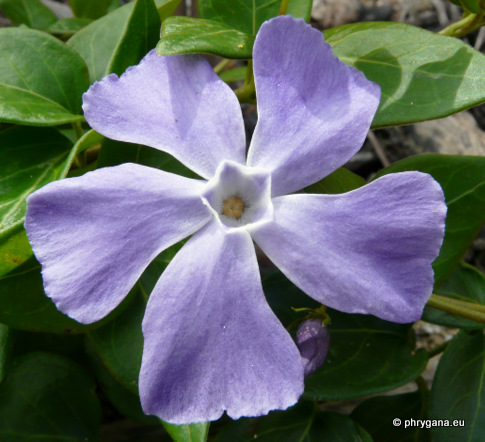

| PHRYGANA | Fauna | Flora |
additions nouveautés |
espèces species |
contact -
info - commentaires phrygana1 (at) gmail.com |
| diversité crétoise -- Cretan diversity | |||||
| Vinca major L. |
| 244 | Flora | APOCYNACEAE | Vinca L. |
Vinca major Melambes (Agios Giorgos) 19 mars 2011 |
| en: Greater Periwinkle fr: la Grande pervenche | |
| Sous-arbrisseau sempervirent, avec de longues tiges souples couchées, s'enracinant aux extrémités | |
| Feuilles: opposées, vert franc, luisantes, ovales-acuminées, pétiolées. | |
| Fleurs: solitaires, bleues à bleu clair, courtement pédonculées; calice à lobes linéaires, pointus, ciliés (10 à 15 mm); corolle large de 30 à 50 mm; tube 12 - 15 mm | |
| Fruit: une capsule allongée (8 - 18 cm), brun rougeâtre, s'ouvrant longitudinalement. | |
| Hauteur: 10 - 30 (-50) cm | Type biologique: chaméphyte rampant |
| Floraison: avril mai juin juillet août | |
| Altitudes: 100 - 700 m | |
| Statut en Crète: indigène -- cultivé, parfois naturalisé | |
| Biotopes en Crète: terrasses abandonnées, abords de village en situation fraîche, pieds de haies; souvent planté pour l'ornementation et parfois naturalisé | |
| Distribution: région Méditerranéenne, Asie mineure | |
| Espèce héliophile ou de demi-ombre. | |
| Il existe un cultivar à feuilles panachées Vinca major cv. 'Variegata' cultivé pour l'ornementation | |
|
 Vinca major Melambes (Agios Giorgos) 17 mars 2011 Vinca major Melambes (Agios Giorgos) 19 mars 2011 |
|
Vinca major Melambes (Agios Giorgos) 19 mars 2011 |
|
Vinca major Melambes (Agios Giorgos) 17 mars 2011 |
| 23 mars 2011 |
| © paul fontaine -- © Phrygana.eu 2007 -- 2013 |